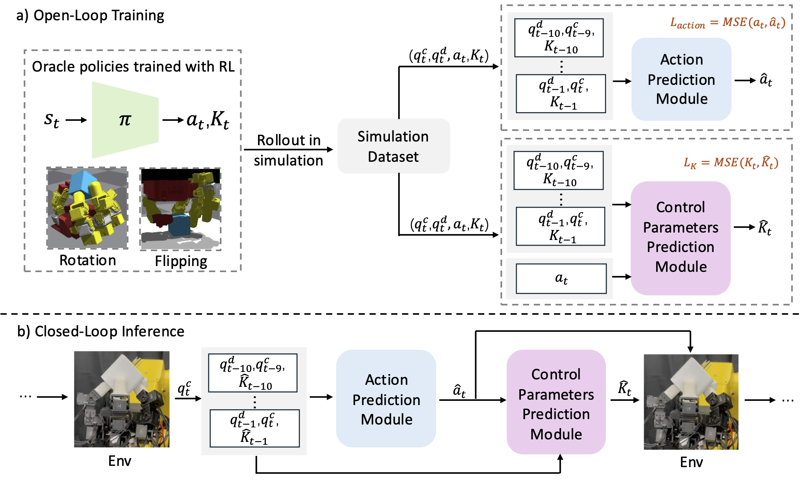
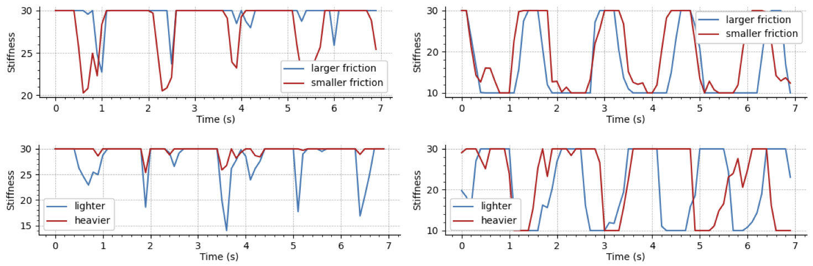

Dexterous manipulation has seen remarkable progress in recent years, with policies capable of executing many complex and contact-rich tasks in simulation. However, transferring these policies from simulation to real world remains a significant challenge. One important issue is the mismatch in low-level controller dynamics, where identical trajectories can lead to vastly different contact forces and behaviors when control parameters vary. Existing approaches often rely on manual tuning or controller randomization, which can be labor-intensive, task-specific, and introduce significant training difficulty.
In this work, we propose a framework that jointly learns actions and controller parameters based on the historical information of both trajectory and controller. This adaptive controller adjustment mechanism allows the policy to automatically tune control parameters during execution, thereby mitigating the sim-to-real gap without extensive manual tuning or excessive randomization. Moreover, by explicitly providing controller parameters as part of the observation, our approach facilitates better reasoning over force interactions and improves robustness in real-world scenarios. Experimental results demonstrate that our method achieves improved transfer performance across a variety of dexterous tasks involving variable force conditions.

(a) Open-loop training. During training, we first collect sufficient data using an oracle policy trained in simulation with diverse object physical parameters. Then we distill two separate models to predict desired action and control parameters, respectively, based on historical information extracted from the collected dataset. (b) Closed-loop inference. During inference, we recursively predict desired actions for the next step given current and historical observations, and then predict control parameters for the next step based on the generated desired action.
DexCtrl realizes zero-shot transfer among different objects in the real-world setup.
To ensure DexCtrl performance over confounding factors (mass and friction), we use a hollow cube for mass experiments and vary its mass by inserting different internal objects, and use cubes of different textures with the same mass for friction experiments.
Through comparsion between performances among different physical parameters, we investigate how do the learned controller parameters affect dexterous manipulation performance and validate that variations in control parameters are closely related to object-specific physical configurations, aiming to provide better adaptation to varying force requirements.

We also test DexCtrl flipping performance on real-world setting. This validates that our method can deal with complicated situation that includes dynamic contact among object, robot and ground floor(fixed platform).
@article{zhao2025dexctrl,
title={DexCtrl: Towards Sim-to-Real Dexterity with Adaptive Controller Learning},
author={Zhao, Shuqi and Yang, Ke and Chen, Yuxin and Li, Chenran and Xie, Yichen and Zhang, Xiang and Wang, Changhao and Tomizuka, Masayoshi},
journal={arXiv preprint arXiv:2505.00991},
year={2025}
}